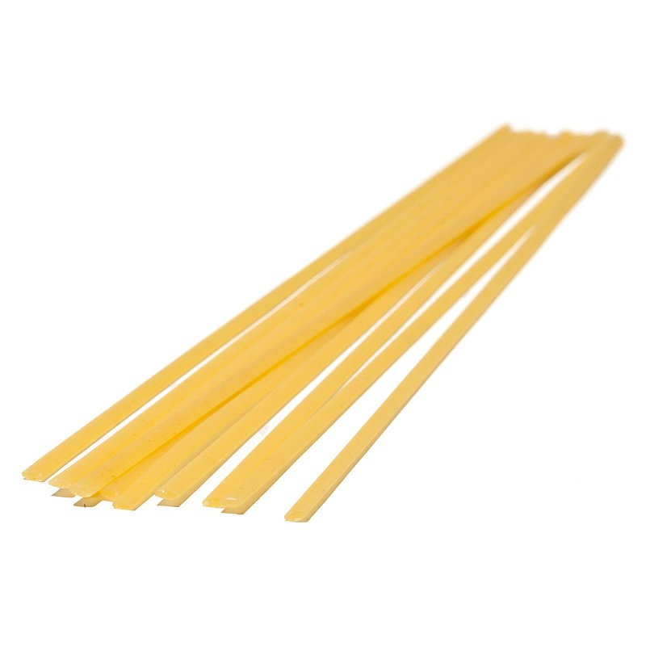

나포리탄(일본어: ナポリタン)은 삶은 스파게티를 양파, 피망, 햄 등과 함께 토마토 케첩으로 볶은 일본 요리이다. 일본에서 창작된 일본풍 파스타 요리이며 비슷한 이름을 가진 이탈리아 요리인 스파게티 알라 나폴레타나와는 다르다. 요코하마시에서 처음 만들어진 것으로 여겨진다

준비가 되었다면 맛있는 나폴리탄 파스타를 만들어볼까요?

| 파스타의 종류 | |||||
|---|---|---|---|---|---|
| \ | 이름 | 사진 | 이름의 유래 | 설명 | 어울리는 요리 방법 |
| 롱 파스타 | 스파게티 (Spaghetti) | 얇은 줄 | 우리나라에서 가장 흔히 볼 수 있는 파스타인 스파게티는 가늘고 긴 둥근형의 롱파스타 형태. 좀 더 가는 것을 '스파게티니'라고 하며, 좀 더 굵은 것은 '스파게토니'라고 부른다. | 토마토, 크림, 로제, 오일 등 모든 소스와 잘 어울리며 한식에서도 국수처럼 활용하기도 한다. | |
| 링귀네(Linguine) |  | 작은 혀 | 스파게티와 같은 롱파스타의 일종인 링귀네는 스파게티 면을 납작하게 누른 모양. 표면적이 넓은 링귀네는 소스와 맛의 조화를 잘 이루는 것이 장점이다. 링귀네보다 좀 더 넓은 것은 '트레네테'라고 부른다. | 간단한 오일파스타 또는 크림소스와 어울리며 특히, 해산물 소스와 조합이 좋다. | |
| 탈리아텔레(Tagliatelle) | 자르다-탈리아레 | 탈리아텔레는 면을 얇고 납작하게 밀어 칼로 잘라 만든 리본 파스타다. 면발이 상당히 길고 넓은 형태로 너비가 약 8mm 정도. 우리나라의 칼국수와 비슷하다. 리아텔레보다 너비가 약간 더 넓은 것은 '페투치네'라 부르며 주로 감긴 상태로 판매한다. | 흡수성이 좋아 크림소스와 잘 어울린다. | ||
| 부가티니(Bucatini) | 뚫다-부카레 | 부가티니는 겉보기에는 스파게티와 비슷해 보이지만 두께가 조금 더 두껍고 파스타 안에 작은 구멍이 뚫려 있다. 두꺼운 면이지만 구멍이 있어 조리시간이 길지 않고 소스가 잘 배어든다. 씹을수록 쫄깃한 식감을 더 잘 느낄 수 있다. | 크림소스나 미트 소스같은 진한 소스와 잘 어울린다. | ||
| 라자냐(Lasagna) | 파스타 한장 | 롱파스타 중에서 크기가 가장 큰 파스타인 라자냐. 반죽을 얇게 밀어 넓적한 직사각형으로 자른 모양의 파스타다. | 주로 라자냐를 삶은 후 토마토소스, 치즈, 다진 고기를 넣어 구워내서 먹는다. | ||
| 숏 파스타 | 펜네(Penne) | 꽁지 | 우리나라의 떡볶이와 비슷한 펜네는 우리나라에서 가장 흔히 볼 수 있는 숏 파스타의 일종이다. 양 끝을 사선으로 자른 원통형으로 면발이 더 넓은 것은 '펜노니'라고 부른다. 구멍이 있고 표면에 세로줄 무늬가 있어서 소스와 잘 어우러지는 것이 장점. 특유의 식감이 좋고 치즈와 조합이 좋다. | 토마토소스나 샐러드로 주로 요리하며 특히, 그라탕에 많이 사용한다. | 푸실리(Fusilli) | 꽈배기 | 펜네와 함께 가장 대중화된 푸실리. 숏 파스타의 하나로 꼬불꼬불하니 스프링같은 모양을 가진 파스타다. 굵기에 따라 종류가 다양하며, 색상도 다양해 조리시 색감이 아름답다. 나선 모양의 주름 사이로 소스가 잘 배어들어 소스의 풍미를 더욱 잘 느낄 수 있다. | 쫀득한 식감으로 샐러드로 먹을 때 좋다. |
| 파르펠레(Farfalle) | 나비 | 나비넥타이 모양의 숏파스타. 씹는 식감이 좋으며, 색감도 다양해 보는 재미가 있다. | 토마토소스 같은 가벼운 소스나 차가운 샐러드에 주로 사용한다. | ||
| 콘킬리에(Conchiglie) | 조개껍데기 | 앙증맞은 모양새의 숏 파스타. 삶는 시간이 오래 걸리지만, 안으로 감긴 공간에 소스가 듬뿍 담겨 소스의 풍부한 맛을 느낄 수 있다. | 사이즈가 여러 가지인데 가장 큰사이즈의 콘킬리에는 안에 갈은 고기나 재료로 속을 채워 핑거푸드로 먹고, 중간 사이즈는 주로 샐러드에 사용한다. | ||
| 리가토니(Rigatoni) | 선-리게 | 숏파스타의 일종인 리가토니는 굵은 국수를 짧게 자른 모양으로 속이 빈 튜브형태다. 리가토니보다 길이가 짧고 약간 구부러진 형태를 '메치 리가토니'라 부른다. 씹는 재미가 있는 리가토니는 구멍 속으로 소스가 잘 배어들어 진한 소스에 잘 어울린다. | 미트 소스나 채소 소스, 소시지 소스 등과 잘 어울리고, 특히 리가토니에 미트 소스나 베샤멜 소스(Béchamel sauce)를 곁들여 오븐에 굽는 요리법은 소스의 풍부한 맛을 느낄 수 있어 이상적인 요리방법으로 손꼽힌다. |